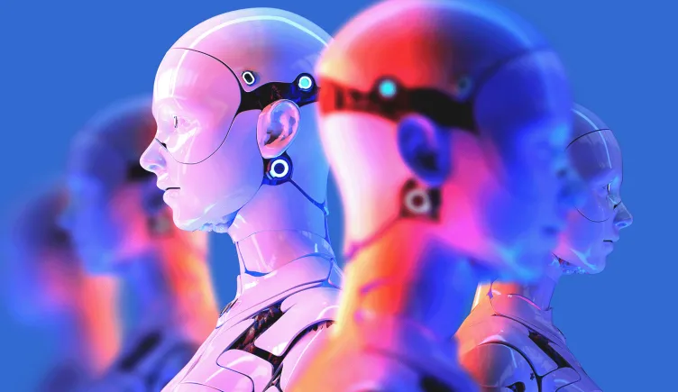

Humonaid Robots
A Humonaidd Robot is similar to a human body. In shape these robots are profesisonal.
Read MoreA Humonaidd Robot is similar to a human body. In shape these robots are profesisonal.
Read More
Service robots built for interaction with human tools and customer service
Read More